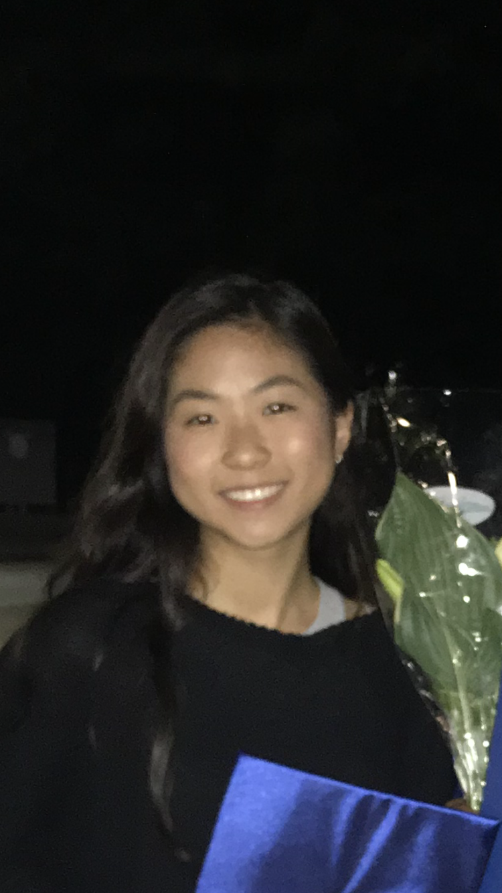

I was born in Seoul, Korea and first moved to St. Paul, Minnesota when I was five years old. I have resided in Georgia for the most of my life, and I feel as though I have really integrated myself within American culture.
I love travelling, spending time with my friends, watching movies and shows, and playing video games in my free time.
I am a 2nd-year CS major from Johns Creek, GA with threads Info-networks/Intelligence. I am currently seeking a software engineering internship for the summer of 2022 to enhance my skills in programming and team projects. I would love to work in machine learning and AI as, during my research at the Lerner Research Institute, I saw how useful machine learning could be even in the medical field. I am extremely hardworking and eager to expand my knowledge constantly in all aspects of software engineering.
GPA: 3.89/4.0
Relevant Coursework: